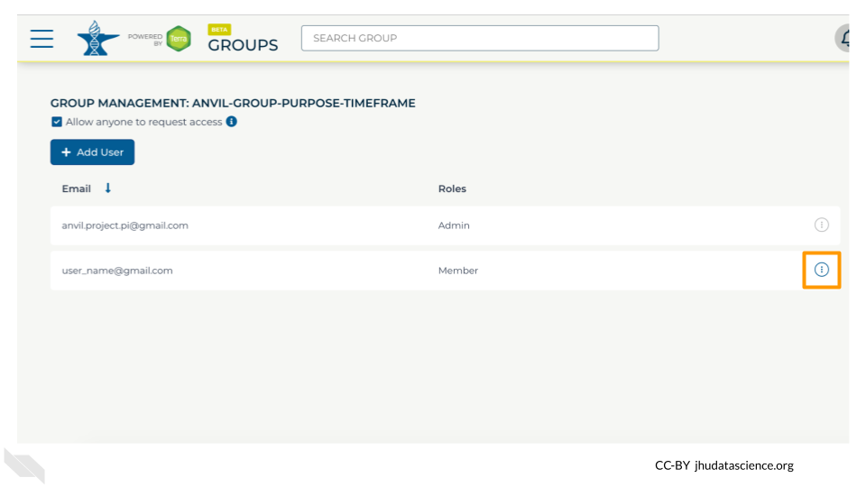
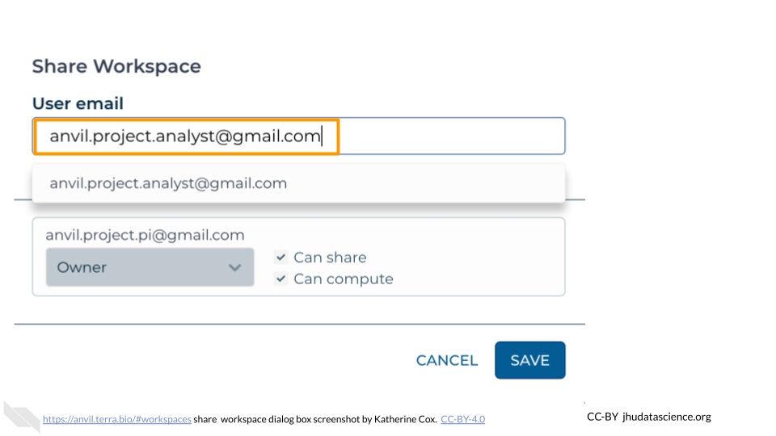

Chapter 12 Set Up Student Accounts
In order for your students to compute on AnVIL, they will need to set up an account and provide you with their username so that you can grant them access to resources (Billing Projects and Workspaces).
If possible, it can be helpful to do this ahead of time, so that you do not need to dedicate class time for it.
Make sure you understand when and where your students can spend money!
The following actions will give your students the ability to spend money on AnVIL:
- Adding them to a Billing Project - this will let them create their own Workspaces
- Adding them as Writers or Owners to a Workspace - this will let them compute in the Workspace
Our recommendation is to do most set up ahead of time:
- Create Student Group (and add Instructors)
- Have students create accounts (and collect usernames)
- Add students to the Student Group
- Give the Student Group access to any Workspaces as Readers. This will let them view the contents but not spend money.
Wait until shortly before the students need to compute to add the Student Group to the Billing Project. This prevents them from accruing costs on your Billing Project without your guidance.
This chapter walks through all of the student setup steps that can safely be done ahead of time. The final step for activating student billing is covered in the next chapter.
12.1 Create Student Group
Creating a Group for your students will let you easily manage the class as a whole by granting the Group access to Billing Projects and Workspaces.
You will need a unique name for your Group. We suggest a combination of institution-class-role-term (e.g., jhu-bio101-students-2023FA). Only letters, numbers, underscores, and dashes are allowed in Group names.
To create a Group:
Launch Terra and sign in with your Google account.
In the drop-down menu on the left, navigate to “Groups”. Click the triple bar in the top left corner to access the menu. Click the arrow next to your name to expand the menu, then click “Groups”. You can also navigate there directly with this link: https://anvil.terra.bio/#groups

Click “+ Create a New Group”

Enter a name for your group. Names must be unique, so it’s often helpful to include your team’s name, the purpose of the group, and optionally the timeframe, if you will have similar groups in the future.

Click “CREATE GROUP”

Your new Group should now show up on the Group Management screen. Take note of the email address associated with your group. You will use this email to grant the group access to Billing Projects and Workspaces.

You now have a unique Student Group.
12.1.1 Add Instructors to Group
Now that your student Group has been created, you should add any additional instructors / course coordinators as Admins. This will give them permission to add and remove students, in case you are unavailable.
If you created an instructor Group, you can instead add the Instructor Group as an Admin of the Student Group. This will enable everyone in the Instructor Group to act as an Admin for the Student Group. To do this, you will need the email address associated with the Instructor Group, which can be found on the Group management page: https://anvil.terra.bio/#groups.
The following instructions explain how to add someone to a Terra Group. You will want to add instructors to the Student Group as Admins.
Launch Terra and sign in with your Google account.
In the drop-down menu on the left, navigate to “Groups”. Click the triple bar in the top left corner to access the menu. Click the arrow next to your name to expand the menu, then click “Groups”. You can also navigate there directly with this link: https://anvil.terra.bio/#groups
Find the name of the Group you want to add someone to, and confirm that you have Admin privileges for the Group (you can only add and remove members to a Group if you are an Admin). Click on the name of the Group to view and manage members.

Click on “+ Add User”. You will be prompted to enter the user’s AnVIL ID.

Type in the user’s email address. Make sure this is the account that they will be using to access AnVIL.
If this member will need to add and remove other members of the Group, check the box for “Can manage members (admin)”. This will add them as an “Admin” for the Group. Otherwise leave it unchecked, and they will be added as a “Member”.
- Admins and Members have equal access to any resources shared with the Group.
- Admins can manage Group membership - they can add, remove, or change the role of other Group members.

Click ADD USER. This will take you back to the Group administration page.

The new Group member will now be shown in the list of group members, along with their role. They should now have access to anything that the Group has been given access to.

If you need to remove members or modify their roles, you can do so at any time by clicking the teardrop button next to their name.

12.2 Have Students Create Accounts
Each of your students will need to:
- Create a Google account, if they do not already have one
- Sign in to Terra
- Provide you with their username, so that you can add them to your Student Group
Student-facing instructions for account creation (and several other activities) are provided in the Student Instructions section.
12.3 Add Students to Group
Once your students have accounts, you will need to add them to your Student Group as Members.
In order to add students to your Group, you will need the usernames for the Google accounts your students are using to access AnVIL.
Unfortunately there is currently no way to add members to a Group in bulk, so you will need to add students to the Group one-by-one.
The following instructions explain how to add someone to a Terra Group. You will want to add students to the Group as Members.
Launch Terra and sign in with your Google account.
In the drop-down menu on the left, navigate to “Groups”. Click the triple bar in the top left corner to access the menu. Click the arrow next to your name to expand the menu, then click “Groups”. You can also navigate there directly with this link: https://anvil.terra.bio/#groups
Find the name of the Group you want to add someone to, and confirm that you have Admin privileges for the Group (you can only add and remove members to a Group if you are an Admin). Click on the name of the Group to view and manage members.
Click on “+ Add User”. You will be prompted to enter the user’s AnVIL ID.
Type in the user’s email address. Make sure this is the account that they will be using to access AnVIL.
If this member will need to add and remove other members of the Group, check the box for “Can manage members (admin)”. This will add them as an “Admin” for the Group. Otherwise leave it unchecked, and they will be added as a “Member”.
- Admins and Members have equal access to any resources shared with the Group.
- Admins can manage Group membership - they can add, remove, or change the role of other Group members.
Click ADD USER. This will take you back to the Group administration page.
The new Group member will now be shown in the list of group members, along with their role. They should now have access to anything that the Group has been given access to.
If you need to remove members or modify their roles, you can do so at any time by clicking the teardrop button next to their name.
12.4 Add Student Group to Workspace
Now that you have added students to the Group, you can easily share Terra resources with the entire Group.
First, you will need to give your Student Group access to any Workspaces that they will need.
If you are using a Public Workspace (some content uses Public Workspaces), you can skip this step - Public Workspaces are automatically available to everyone on AnVIL.
If you have Workspaces of your own that your students will need to access, you should add the Student Group to your Workspace(s) as a Reader.
- Adding students as a Reader gives them permission to view the Workspace, and (once they have funding) to clone their own copy. This will enable them to work safely in their own space without interfering with each other or overwriting anything in the original Workspace.
- Adding students to your Workspace(s) can safely be done ahead of time; as Readers they can’t run computations and run up a bill.
Adding the Student Group to a Workspace will give all members of the Group access to the Workspace in one easy step. To add the Student Group to a Workspace, you will need the Group email address, which can be found on the Group management page: https://anvil.terra.bio/#groups
The following instructions explain how to add users to a Terra Workspace. You will want to add the Student Group to the Workspace as Reader.
In the drop-down menu on the left, navigate to “Workspaces”. Click the triple bar in the top left corner to access the menu. Click “Workspaces”.

Click on the name of the Workspace to open the Workspace. Opening a Workspace does not cost anything. Certain activities in the Workspace (such as running an analysis) will charge to the Workspace’s Billing Project. Workspace management (e.g. adding and removing members, editing the description) does not cost money.

Click the teardrop button (
 ) on the right hand side to open the Workspace management menu. Click “Share”
) on the right hand side to open the Workspace management menu. Click “Share”
Enter the email address of the user or Group you’d like to share the Workspace with.
- If adding an individual, make sure to enter the account that they use to access AnVIL.
- If adding a Terra Group, use the Group email address, which can be found on the Terra Group management page.

Choose their permission level.
- Remember that all activity in the Workspace will be charged to the Workspace’s Billing Project, regardless of who conducts it, so only add members as “Writers” or “Owners” if they should be charging to the Workspace’s Billing Project.
- “Readers” can view all parts of the Workspace but cannot make edits or run analyses (i.e. they cannot spend money). They can also clone their own copy of the Workspace where they can conduct activity on their own Billing Project.

Click “Save”. The user should now be able to see the Workspace when logged in to Terra.

Make sure the newly added Student Group displays “Reader” under “Roles”.